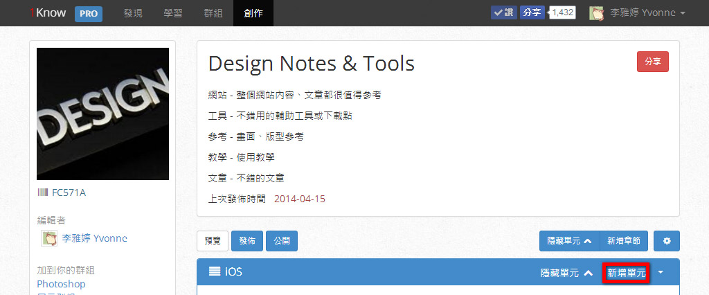
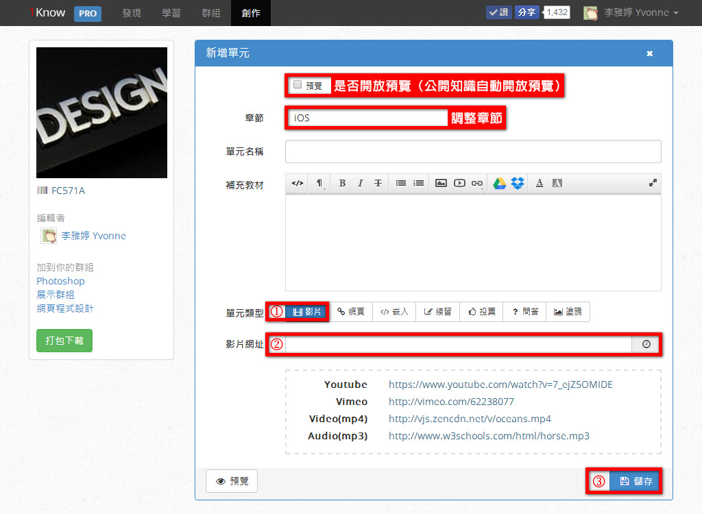
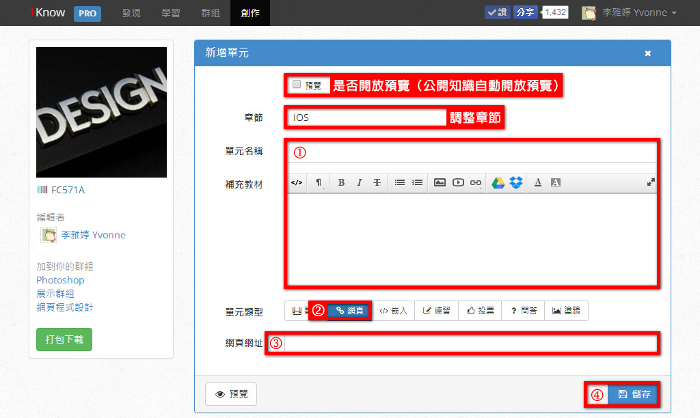
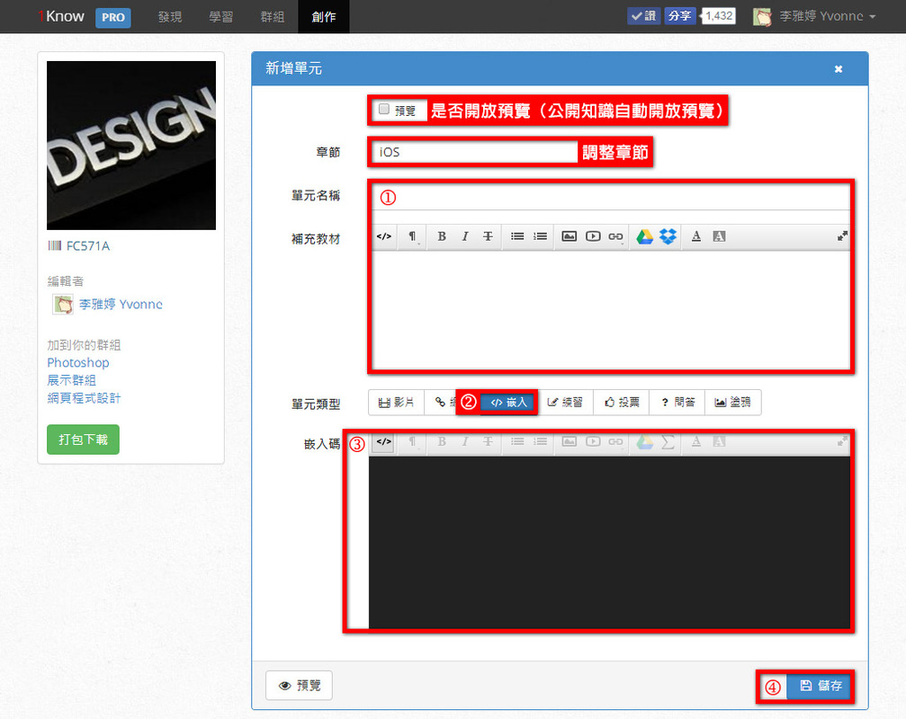
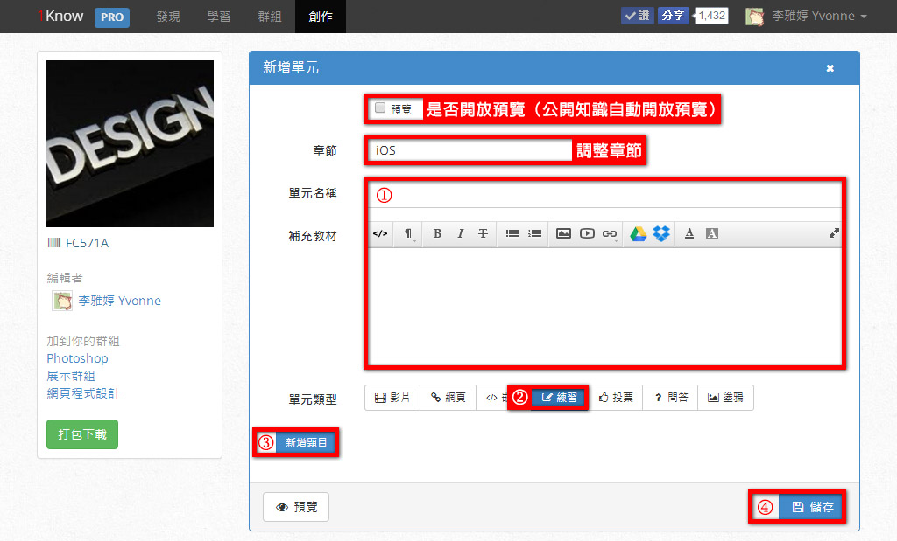
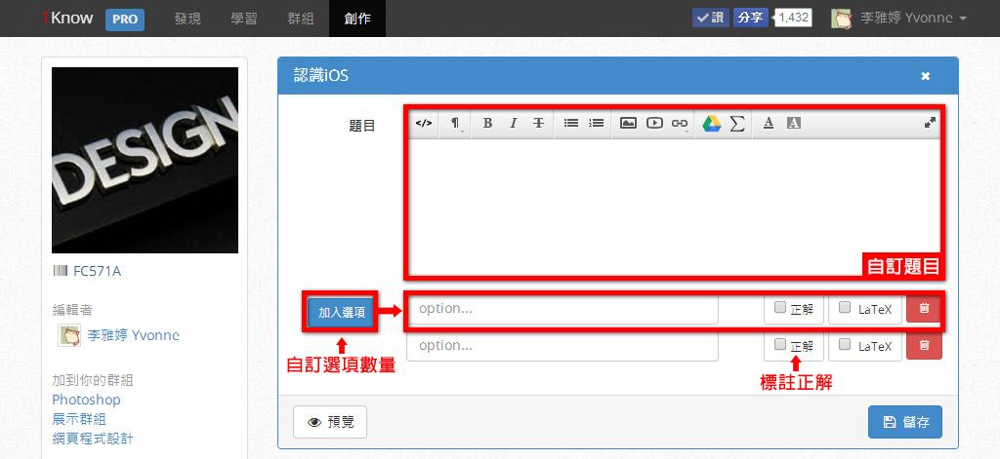
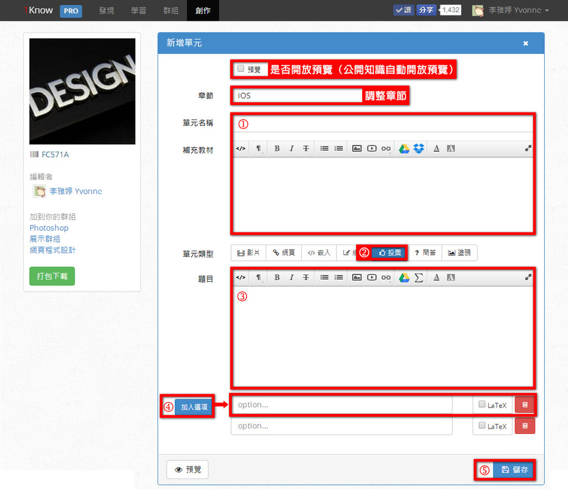
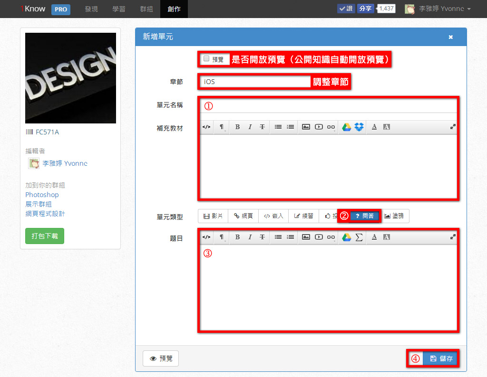
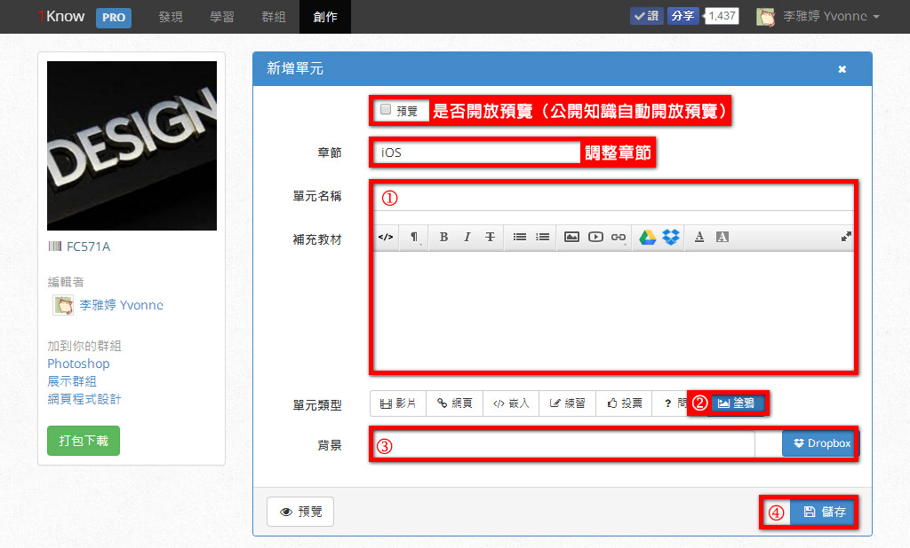

1know.cn
安装版操作
单元建置类型
知识的层级架构很简单，即知识＞章节＞单元；章节是将单元进行分类，所以只要输入名称，
不需再设定些什么了。
所以，创作知识最主要的就是单元的内容。
新增单元之后，可依内容呈现方式分为影片、网页、嵌入、练习、投票、问答、涂鸭，便于
多元化的展现知识内容与共学互动。

「影片」类型
影片类型对学生来说，除了声音、画面的吸引力，其中还有一项特色是备注笔记时，会自动加上时间标记，记录这则笔记是关于影片中的几分几秒，下回复习时，可以直接跳到重点时段，进行学习。

影片类型建置的重点步骤：
单元类型，选择影片。
网址列直接键入YouTube、Vimeo、Video（mp4）或Audio（mp3）的网址。
此时，上方的单元名称和补充教材内容，会直接将来自影音平台内的资讯带入。
储存。
「网页」类型
网页单元的建置和影片式很像，重点是要输入单元名称和将影片网址改为网页网址。

网页类型建置的重点步骤：
输入单元名称与补充教材。
选择网页类型。
输入网页网址。
少部分的网站可能会出现不允许嵌入连结的情况，这时预览单元内容时，会出现空白，无法呈现连结页面的容。
例如：tw.yahoo.com（首页不允许，但内页其他连结可以。）
储存。
「嵌入」类型
越来越多网站乐于提供嵌入语法，像Slideshare、Sky Drive、Google Drive、教育部生字笔
顺学习网、Quizlet……等，让内容的连结更方便、主题更明确。
嵌入类型让你可以快速将一些Widgets小工具语法、其他网路平台分享的语法直接嵌入，形成更好的应用，对于熟悉语法的人来说，也可以自订一些不同的呈现方式。

嵌入类型建置的重点步骤：
输入单元名称与补充教材。
选择嵌入类型。
贴上嵌入码。
储存。
「练习」类型
你可以在单元中安排类似在学期间的测验题型，帮助学生了解先前单元内容的理解程度。
这
是练习类型的特色。

练习类型建置的重点步骤：
输入单元名称
与补充教材。
选择练习题型。
开始新增题目。
练习题提供弹性新增题数、选项数与正解数，这表示一个单元练习可以出很多题，也可以是5题的小练习。
而练习的选项数量可以2 、3、4个……，另外，当正解数设为多个时，就形成了复选题。
提供正解能在成员作答时自动进行答题分析。
这里的练习主要从答对与否逐步形成精熟学习，而非从分数的角度进行评比，所以这个单元只有完成与否，而不是以得分来呈现学习成效喔！

4. 储存。
「投票」类型
投票类型可以针对议题做单选或复选式投票，同「练习」形式很像。
一样提供线上编辑器，让题目可有文字、图片、档案等多类型方式呈现，一样可在学习后进行分析与图表展现；不同的是，投票没有正确解答，只可新增一个题目，无法像「练习」可无限的新增题目。
另外，因为投票类型的活动属性，适合用在群组学习中，集合众人之力显示投票的结果。
因此，成员如果只在个人自我学习时送出投票结果，是没有对应资讯可以浏览的。
管理员则可以在群组活动中选定这个投票单元，了解全部成员在家投票情况。
或利用同步教学「开始上课」即时呈现成员投票回馈情况。

投票类型建置的重点步骤：
输入单元名称与补充教材。
选择投票题型。
输入题目。
开始新增选项。
储存。
「问答」类型
问答类型提供开放式的作答空间，让成员除了对错的练习、议题性的投票，还有更深入整理
与表达的机会。

问答类型建置的重点步骤：
输入单元名称与补充教材。
选择问答题型。
输入题目。
储存。
「涂鸦」类型
涂鸦的互动与趣味性很高，可以用在练习写字、确认笔顺正确性、数学解题历程等学习课程，
也可单纯的让学生在这里自由的创作。
涂鸭题型在一般个人进行自我学习时，就可以练习了。
若用在「群组」的同步教学「开始上课」学习中，可以让老师在教学中与学生互动。
其中群
组成员（学生）可自由调整笔色、拖拉涂鸭、播放涂鸦历程，最后送出作品；群组管理员（老
师）即可透过作品或播放来浏览每一个学生的学习情况。

涂鸦类型建置的重点步骤：
输入单元名称
。
选择涂鸦类型
。
依据主题设计，自由决定是否需要搭配背景图示。
例如：笔顺的引导，可以做好一个背景图上传至云端硬碟、设定为公开。
设定好背景图连
结点，使用者在涂鸭时便可跟着背景图的提示进行练习。
数学算式，或许只需要在描述上出题，不用提供背景图。
储存。
返回安装版操作>